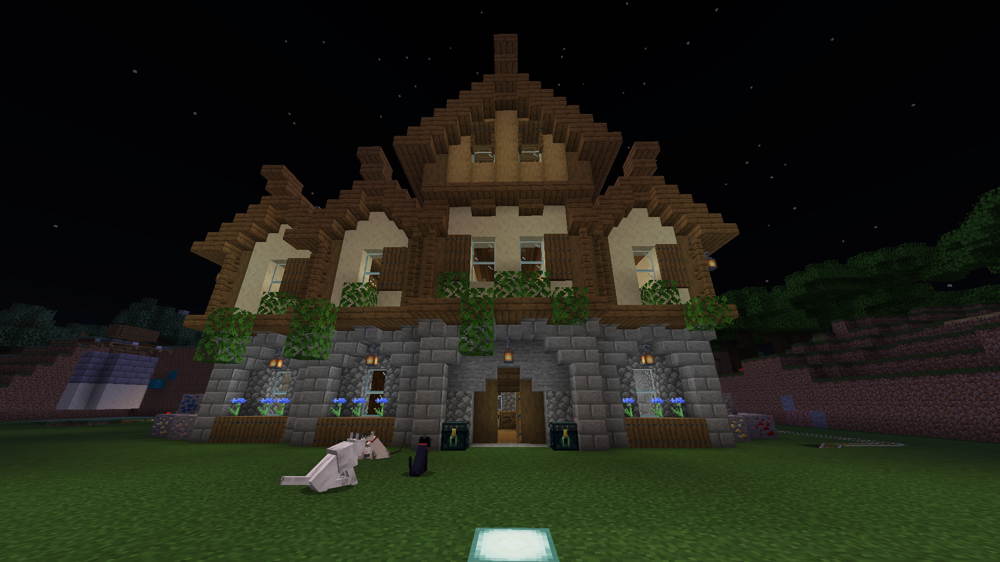
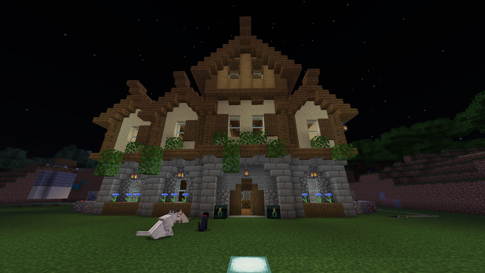

Spela.nordatlas.se är en Svensk minecraft roleplay server som använder sig av många olika plugins. Servern har funnits i lite över 16 månader och har en väldigt aktiv spelarbas. Servern är baserat på de nordiska länderna Sverige, Finland, Danmark och Norge, På servern finns även baltiska länderna Lettland, Litauen och Estland. De populäraste länderna är Sverige och Finland men en del folk bor även i Norge. Huvudsyftet med servern är att starta sina egna städer med ett plugin som heter Towny och i städerna så skapar man infrastruktur, butiker, byggnader, Jordbruk, banker och mycket mer. Det finns många olika städer och de har helt olika ekonomier och hur de fungerar. De populäraste städerna är oftast de som är mest framgångsrika men det stämmer inte alltid. Vi har ett ekonomisktsystem som drivs av att staten köper upp produkter och av olika jobb som staten skapar. I systemet finns cirka 10 miljoner NK (Nordatlas kronor) som är fördelat bland lite över 250-500 spelar. Det finns personal på servern som kallas Ministrar och Poliser, personalen är ofta de som spelar mest och därför är oftare polisen rikare än de andra spelarna. På servern kan man driva företag där det finns flera olika branscher som butiker, investeringsbolag, byggföretag, jordbruksföretag och många fler men dessa är de vanligaste. I dessa bolagen kan man köpa aktier och det finns en hel aktiemarknad på där man kan köpa och sälja aktier i. Just nu finns 6 olika företag som är noterad på börsen som heter Vasabörsen som drivs av op266 och Qasdewred. Företagen har gått lite olika bra men den som har presterat väldigt olika men de top 3 populäraste företagen är Vasa_ab som är en butik som säljer allt ifrån mineraler till mat till elytror. Vasa_ab är det företaget som har presterat bäst och den har haft en Avkastning på över 1286% vilket är väldigt mycket företaget är värderat till 840 tusen NK. Vasa_investments är det som har presterat näst bäst och det är ett investeringsbolag som har haft en avkastning 400% vilket också är väldigt bra för ett företag på Nordatlas och har en värdering på cirka 400 tusen NK. Slutligen så är det Tokmanni som också är en butik som har haft en avkastning på 86% vilket inte är lika bra men det är helt okej företaget är värderat på 372 tusen NK. Börsmarknaden har endast funnits i runt 2,5 månad så det är ganska nytt men väldigt aktivt och framgångsrikt.